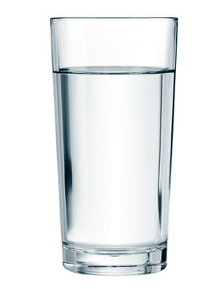

Home
Glass of Water

Description
Ingredients
Steps
- Make a glass cup from Silica Sand
- Go to a faucet or other water source
- Fill cup with ketchup
- Regret decisions
- Decide to drink ketchup rather than waste it
- Clean glass with water
- Enlightenment
- Fill cup with Water
- Enjoy